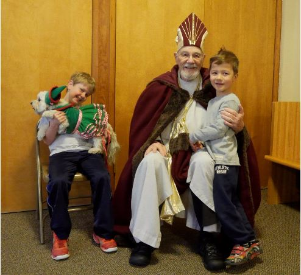

Sunday, Second Week of Advent
Isaiah 40:1-11; Psalm 84:1-2,8-13; 2 Peter 3:8-15a; Mark 1:1-8
Saint Nicholas Day
To me, the start of Advent is not first Sunday of Advent (this year, November 29) but Saint Nicholas Day (December 6).
When I was a child, my family lived in an apartment in Düsseldorf, West Germany. The first year we were there, we left our apartment on the morning of December 6 to find a magical surprise waiting just outside our door. There were three child-sized plastic boots, each filled with candy! The neighbors upstairs explained, with a twinkle in their eyes, that Saint Nicholas had visited us in the night. Every year after that, my brothers and I each left a shoe outside our door before we went to bed December 5, and found Saint Nicholas's bounty there in the morning.
Since moving to Issaquah in 2010, our family has enjoyed attending the Saint Nicholas Breakfast at Saint Michael's. There's nothing quite like pancakes, singing carols, and Saint Nicholas himself telling us stories to get us in the holiday mood. We have also made a tradition of picking out our Christmas tree that afternoon, and purchasing a gift for the Giving Tree.
Louis Violette, Christopher Carlson, and Happy enjoy a visit with Saint Nicholas